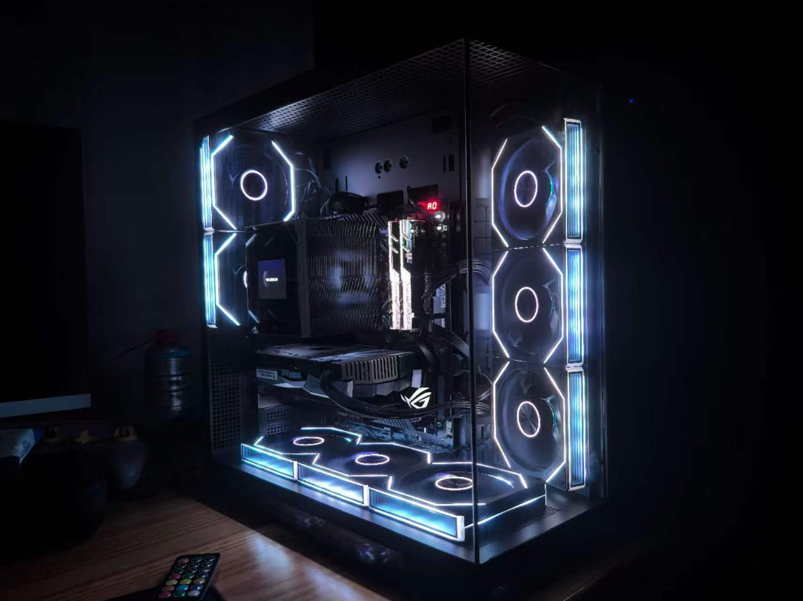

virsh · PelerStoragePelerStorage
OMV-based NAS, providing NFS storage for VM expansion.
INFRASTRUCTURE
From planning to production. Built, deployed, and kept running — a self-designed virtualization platform that crossed an ocean and came back online.
01 — ARCHITECTURE
One Proxmox host, five purpose-built VMs, and a single FRP client that opens the LAN to the outside. Hover a node to inspect it.
02 — HARDWARE
Sourced from existing parts and carefully chosen second-hand components, then designed as one cohesive system — with a deliberate focus on structure, reliability and layout.
$ cat /etc/server/hardware.conf
$
Raw capacity by drive — fast tier for VMs, bulk tier for media and backups.
03 — SERVICES
Roles are split so a failure, an experiment, or an untrusted workload never takes the rest of the platform with it.
virsh · PelerStorageOMV-based NAS, providing NFS storage for VM expansion.
virsh · PelerFRPFRP client giving LAN devices and VMs NAT traversal, so they can be reached from outside.
virsh · PelerComputingWindows with GPU passthrough: remote Autodesk Fusion from a MacBook Air, and game streaming when idle.
virsh · PelerServerUbuntu host running Docker services — media, ebooks, manga.
virsh · PelerAgentFree workspace for agents like Claude Code and Codex, for remote and background development.
$ virsh list --all5 units loaded, 5 active, 0 failed.
04 — ENGINEERING
Two design decisions where the obvious path was closed, and the solution had to be built.
FEATURED DESIGN
QUALITY OF LIFE
05 — JOURNEY
Cloud servers eventually stopped being enough. Out of curiosity, I repurposed an old gaming PC and, with some trial-and-error port forwarding, brought my first self-hosted server online. It wasn't perfect—but it worked. Soon, it became the backbone for late-night Minecraft sessions with friends, and more importantly, my first real step into building systems of my own.
That initial curiosity turned into something more serious. In my spare time, I began helping maintain the school's computer lab, gaining hands-on experience with hardware, troubleshooting, and system upkeep. Along the way, I was guided by a teacher who was a seasoned home lab builder—someone who showed me what was possible beyond just "making things work."
After graduating from high school, I decided to build something truly mine. Starting from hardware sourcing—mixing existing components with carefully selected second-hand parts—I designed and assembled a server from the ground up. What began as scattered pieces gradually became a cohesive system: one that not only delivers solid performance, but also reflects a deliberate focus on structure, reliability, and design.
Disassembled and shipped across the ocean over half a month, the entire system made its way to Australia piece by piece. When it finally arrived, I rebuilt it from the ground up—every component intact, undamaged, and ready to run again.
06 — PRINCIPLES
One VM, one responsibility. Agents and experiments get a space of their own.
Everything reachable from outside goes through one FRP client VM.
When hardware and software can't see each other, expose a small API between them instead of forcing a shortcut.
A system that survived being taken apart and shipped across an ocean is one whose structure is understood end to end.
07 — WRITING
Two longer write-ups on the engineering decisions above: what broke, what I tried, and why the final design looks the way it does.

A passive datacenter GPU, a fan wired to the host, and a temperature that only the VM can read. How a small API bridges the two.

OpenRGB is a GUI program and Proxmox has no desktop. SSH X11 forwarding lets the laptop be the display.
Happy to talk through the architecture, the trade-offs, or how to start your own homelab.